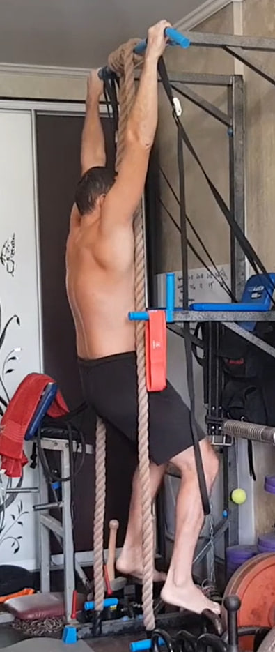
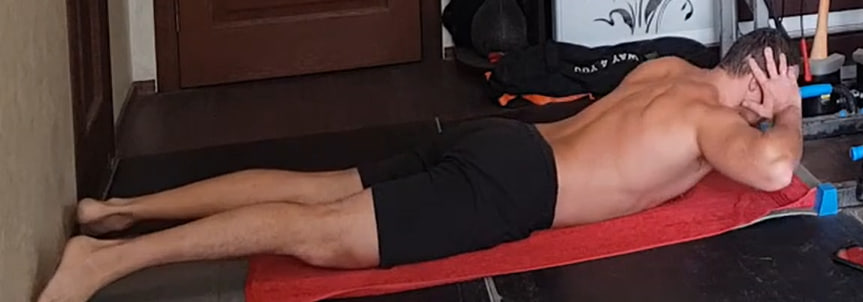
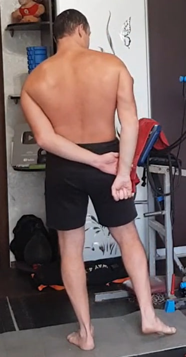
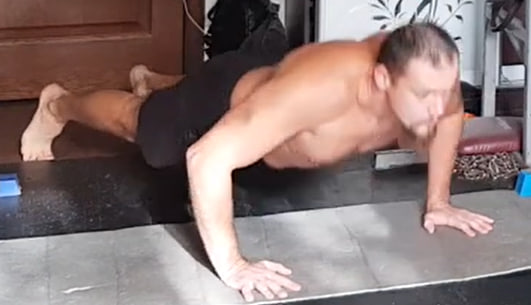

Día 25: isometría y control + empuje (pecho, hombros y tríceps) (sin equipo)
Hoy trabajamos isometría y control, empuje (pecho, hombros y tríceps) con ejercicios simples que caben en una habitación. El objetivo es construir fuerza útil, resistencia y control corporal con el mínimo de equipo.
Prioriza la técnica, respira con control y acumula consistencia: incluso una sesión corta suma cuando la repites día tras día.
1. Colgamiento parcial con apoyo en los pies — 10×10 s
Antes de empezar: haz el calentamiento y repasa la respiración. (No lo saltes.)
Protocolo isométrico: tensión 10 s + descanso 5 s × 10 repeticiones (por lado, si aplica). Respira 3‑3‑3 durante la tensión (inhalar 3 s, retener 3 s, exhalar 3 s) y usa 3‑6‑3 entre series para recuperar. Más detalles: Respiración.

Agarra una barra o cualquier soporte sólido que no pueda romperse. No cuelgues todo tu peso como en una dominada: deja parte del peso sobre los pies para mantener un estiramiento seguro y controlado. Relaja los hombros y permite que la columna se alargue de forma natural.
Ejecución: Mantén 10 segundos y repite 10 veces.
2. Isometría para dorsal ancho detrás de la espalda — 10×10 s por lado
Antes de empezar: haz el calentamiento y repasa la respiración. (No lo saltes.)
Protocolo isométrico: tensión 10 s + descanso 5 s × 10 repeticiones (por lado, si aplica). Respira 3‑3‑3 durante la tensión (inhalar 3 s, retener 3 s, exhalar 3 s) y usa 3‑6‑3 entre series para recuperar. Más detalles: Respiración.

Misma técnica que en el ejercicio 2: tracción del brazo hacia abajo con bloqueo firme, sin giro del cuerpo. Ejecución: 10 repeticiones por cada lado, manteniendo 10 segundos en cada repetición. Ejecución: Mantén la contracción 10 segundos y repite 10 veces por cada lado .
3. Encogimientos escapulares en la barra — 2×10
Antes de empezar: haz el calentamiento y repasa la respiración. (No lo saltes.)

Cuelga de la barra con control (si hace falta, deja parte del peso en los pies). Alterna un colgado relajado con un movimiento corto de hombros hacia abajo (depresión escapular), sin doblar los codos y sin balancearte.
Ejecución: 2 series de 10 repeticiones.
4. Isometría para dorsal ancho detrás de la espalda — 12×10 s por lado
Antes de empezar: haz el calentamiento y repasa la respiración. (No lo saltes.)
Protocolo isométrico: tensión 10 s + descanso 5 s × 10 repeticiones (por lado, si aplica). Respira 3‑3‑3 durante la tensión (inhalar 3 s, retener 3 s, exhalar 3 s) y usa 3‑6‑3 entre series para recuperar. Más detalles: Respiración.

Misma técnica que en el ejercicio 2: la mano de apoyo tira hacia abajo y el dorsal ancho lo impide, sin movimiento. Ejecución: 12 repeticiones por cada lado, manteniendo 10 segundos en cada repetición. Misma técnica que en el ejercicio 2: la mano de apoyo tira del brazo hacia abajo y el dorsal ancho se contrae para impedirlo, sin movimiento visible del brazo. Ejecución: 12 repeticiones por cada lado, manteniendo 10 segundos en cada repetición.
5. Encogimientos escapulares en la barra — 2×12
Antes de empezar: haz el calentamiento y repasa la respiración. (No lo saltes.)

Misma técnica que en el ejercicio 3: colgado controlado, brazos rectos, sin balanceos. Alterna relajación y hombros hacia abajo.
Ejecución: 2 series de 12 repeticiones.
6. Isometría para dorsal ancho detrás de la espalda — 15×10 s por lado
Antes de empezar: haz el calentamiento y repasa la respiración. (No lo saltes.)
Protocolo isométrico: tensión 10 s + descanso 5 s × 10 repeticiones (por lado, si aplica). Respira 3‑3‑3 durante la tensión (inhalar 3 s, retener 3 s, exhalar 3 s) y usa 3‑6‑3 entre series para recuperar. Más detalles: Respiración.

Misma técnica que en el ejercicio 2: tracción del brazo hacia abajo , torso estable, hombros abajo. Ejecución: 15 repeticiones por cada lado, manteniendo 10 segundos en cada repetición. Misma técnica que en el ejercicio 2: tracción del brazo hacia abajo con bloqueo firme, torso estable y hombros sin elevarse hacia las orejas. Ejecución: 15 repeticiones por cada lado, manteniendo 10 segundos en cada repetición.
7. Colgamiento parcial con apoyo en los pies — 2×15 (10 s)
Antes de empezar: haz el calentamiento y repasa la respiración. (No lo saltes.)

Misma técnica que en el ejercicio 1: apoyo en los pies para controlar la carga, hombros relajados y columna larga. Ejecución: 2 series de 15 repeticiones de 10 segundos. Misma técnica que en el ejercicio 1: apoyo en los pies para controlar la carga, hombros relajados y columna larga. Ejecución: 2 series de 15 repeticiones de 10 segundos.
8. Isometría para dorsal ancho detrás de la espalda — 20×10 s por lado
Antes de empezar: haz el calentamiento y repasa la respiración. (No lo saltes.)
Protocolo isométrico: tensión 10 s + descanso 5 s × 10 repeticiones (por lado, si aplica). Respira 3‑3‑3 durante la tensión (inhalar 3 s, retener 3 s, exhalar 3 s) y usa 3‑6‑3 entre series para recuperar. Más detalles: Respiración.

Misma técnica que en el ejercicio 2: la mano de apoyo tira hacia abajo , el dorsal ancho se contrae para impedir el movimiento, sin balanceos. Ejecución: 20 repeticiones por cada lado, manteniendo 10 segundos en cada repetición. Misma técnica que en el ejercicio 2: la mano de apoyo tira hacia abajo , el dorsal ancho se contrae para impedir el movimiento, sin balanceos. Ejecución: 20 repeticiones por cada lado, manteniendo 10 segundos en cada repetición.
9. Flexiones — al fallo
Antes de empezar: haz el calentamiento y repasa la respiración. (No lo saltes.)

Termina arriba sin bloquear completamente los codos . Ejecución: 1 serie al máximo, hasta el agotamiento.
10. Isometría para dorsal ancho detrás de la espalda — 10×10 s por lado
Antes de empezar: haz el calentamiento y repasa la respiración. (No lo saltes.)
Protocolo isométrico: tensión 10 s + descanso 5 s × 10 repeticiones (por lado, si aplica). Respira 3‑3‑3 durante la tensión (inhalar 3 s, retener 3 s, exhalar 3 s) y usa 3‑6‑3 entre series para recuperar. Más detalles: Respiración.

Misma técnica que en el ejercicio 2: tracción del brazo hacia abajo con bloqueo firme, sin giro del cuerpo. Ejecución: 10 repeticiones por cada lado, manteniendo 10 segundos en cada repetición. Misma técnica que en el ejercicio 2: tracción del brazo hacia abajo con bloqueo firme, sin giro del cuerpo. Ejecución: 10 repeticiones por cada lado, manteniendo 10 segundos en cada repetición.
11. Hiperextensión isométrica en el suelo — 10×10 s
Antes de empezar: haz el calentamiento y repasa la respiración. (No lo saltes.)
Protocolo isométrico: tensión 10 s + descanso 5 s × 10 repeticiones (por lado, si aplica). Respira 3‑3‑3 durante la tensión (inhalar 3 s, retener 3 s, exhalar 3 s) y usa 3‑6‑3 entre series para recuperar. Más detalles: Respiración.

Acuéstate boca abajo. Manos detrás de la cabeza, sin tirar del cuello . Piernas estiradas y activas. Eleva simultáneamente el pecho y las piernas , creando una contracción fuerte de la zona lumbar y los glúteos.
Ejecución: 10 repeticiones, manteniendo 10 segundos arriba en cada repetición.
12. Isometría para dorsal ancho detrás de la espalda — 12×10 s por lado
Antes de empezar: haz el calentamiento y repasa la respiración. (No lo saltes.)
Protocolo isométrico: tensión 10 s + descanso 5 s × 10 repeticiones (por lado, si aplica). Respira 3‑3‑3 durante la tensión (inhalar 3 s, retener 3 s, exhalar 3 s) y usa 3‑6‑3 entre series para recuperar. Más detalles: Respiración.

Misma técnica que en el ejercicio 2: la mano de apoyo tira hacia abajo y el dorsal ancho lo impide, sin movimiento. Ejecución: 12 repeticiones por cada lado, manteniendo 10 segundos en cada repetición. Misma técnica que en el ejercicio 2: la mano de apoyo tira hacia abajo y el dorsal ancho lo impide, sin movimiento. Ejecución: 12 repeticiones por cada lado, manteniendo 10 segundos en cada repetición.
13. Hiperextensión isométrica en el suelo — 2×12 (10 s)
Antes de empezar: haz el calentamiento y repasa la respiración. (No lo saltes.)
Protocolo isométrico: tensión 10 s + descanso 5 s × 10 repeticiones (por lado, si aplica). Respira 3‑3‑3 durante la tensión (inhalar 3 s, retener 3 s, exhalar 3 s) y usa 3‑6‑3 entre series para recuperar. Más detalles: Respiración.

Misma técnica que en el ejercicio 11: eleva pecho y piernas con control, mantén la tensión sin rebotes y baja suave. Ejecución: 2 series de 12 repeticiones, manteniendo 10 segundos arriba en cada repetición. Misma técnica que en el ejercicio 11: eleva pecho y piernas con control, mantén la tensión sin rebotes y baja suave. Ejecución: 2 series de 12 repeticiones, manteniendo 10 segundos arriba en cada repetición.
14. Isometría para dorsal ancho detrás de la espalda — 15×10 s por lado
Antes de empezar: haz el calentamiento y repasa la respiración. (No lo saltes.)
Protocolo isométrico: tensión 10 s + descanso 5 s × 10 repeticiones (por lado, si aplica). Respira 3‑3‑3 durante la tensión (inhalar 3 s, retener 3 s, exhalar 3 s) y usa 3‑6‑3 entre series para recuperar. Más detalles: Respiración.

Misma técnica que en el ejercicio 2: tracción del brazo hacia abajo , torso estable, hombros abajo. Ejecución: 15 repeticiones por cada lado, manteniendo 10 segundos en cada repetición. Misma técnica que en el ejercicio 2: tracción del brazo hacia abajo , torso estable, hombros abajo. Ejecución: 15 repeticiones por cada lado, manteniendo 10 segundos en cada repetición.
15. Hiperextensión en el suelo con pausa — 2×15 (10 s)
Antes de empezar: haz el calentamiento y repasa la respiración. (No lo saltes.)

Misma posición que en el ejercicio 11, pero aquí haces una pausa arriba manteniendo la tensión (pecho y piernas elevados) antes de bajar con control. Ejecución: 2 series de 15 repeticiones, con pausa arriba (estándar: 10 segundos ). Misma posición que en el ejercicio 11, pero aquí haces una pausa arriba manteniendo la tensión (pecho y piernas elevados) antes de bajar con control. Ejecución: 2 series de 15 repeticiones, con pausa arriba (estándar: 10 segundos ).
16. Flexiones — al fallo
Antes de empezar: haz el calentamiento y repasa la respiración. (No lo saltes.)

Misma técnica que en el ejercicio 9: plancha firme, descenso controlado y subida potente. Termina arriba sin bloquear completamente los codos.
Ejecución: 1 serie al máximo, hasta el agotamiento.
Cierre
Experimenta: ajusta ángulos, rango y puntos de tensión hasta encontrar la versión que te sienta bien. Lo importante es que el entrenamiento sea sostenible y te dé ganas de volver. Crea condiciones para entrenar con regularidad, aunque sea poco: 10 minutos cuentan. Esta rutina está pensada para eso: que puedas cumplir incluso con poco espacio, poco tiempo y circunstancias difíciles.